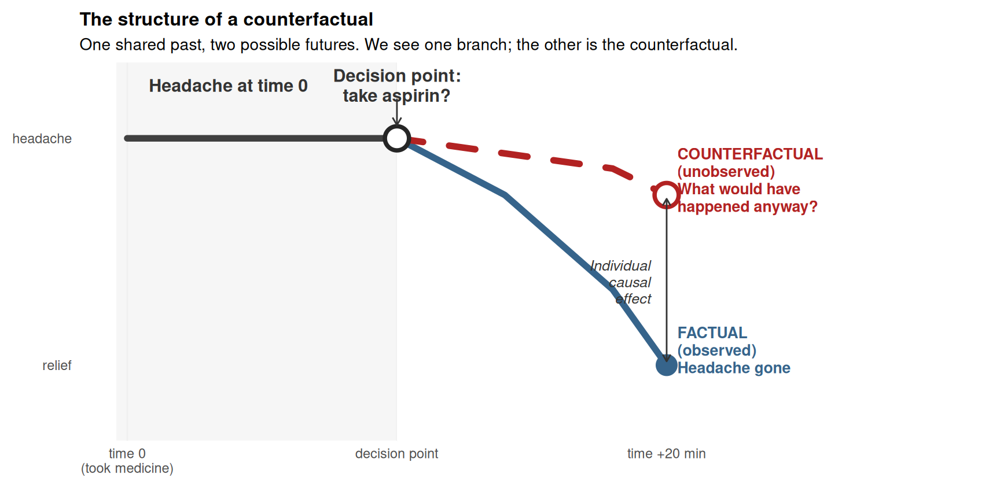
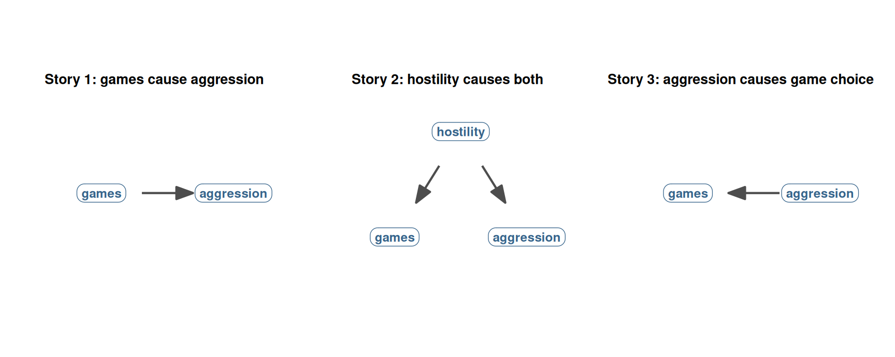

vgames <- read.csv("data/vgames_study.csv")39 Why data alone does not tell us causes
Sections 3 and 4 of this book taught you how to fit a linear model and how to make a calibrated inferential claim about a coefficient. Section 5 taught you how to visualize and report the result. Across all of those chapters, the example you have returned to most often is the comparison between aggression scores in the violent and neutral conditions of vgames_study. In Chapter 17, when we introduced categorical predictors in regression, we fitted the simple model
model_cat <- lm(aggression ~ condition, data = vgames)
summary(model_cat)
Call:
lm(formula = aggression ~ condition, data = vgames)
Residuals:
Min 1Q Median 3Q Max
-4.3650 -0.9650 -0.0617 1.1000 3.0350
Coefficients:
Estimate Std. Error t value Pr(>|t|)
(Intercept) 4.2117 0.1890 22.288 < 2e-16 ***
conditionviolent 1.3533 0.2672 5.064 1.53e-06 ***
---
Signif. codes: 0 '***' 0.001 '**' 0.01 '*' 0.05 '.' 0.1 ' ' 1
Residual standard error: 1.464 on 118 degrees of freedom
Multiple R-squared: 0.1785, Adjusted R-squared: 0.1716
F-statistic: 25.65 on 1 and 118 DF, p-value: 1.53e-06The row labeled conditionviolent has an Estimate of approximately 1.35 aggression scale points, with a 95% confidence interval that excludes zero. We have used this number throughout the book.
The question this section asks is: what is that 1.35 actually telling us? More specifically: is it the causal effect of playing the violent video game on aggression? Or is it only an association, a difference in observed scores that has no particular causal meaning?
This is one of the most important questions a quantitative researcher can ask, and it is also the most commonly mishandled. The answer is not given by the data themselves, and it is not given by any statistical procedure. It depends on the design of the study and on the causal reasoning that links the data to the world. Section 6 is about that reasoning. This chapter is the motivation: why “data alone” cannot tell us which arrows in nature point which way.
39.1 The question many studies are really asking
In almost every published study you have ever read, the underlying question is some version of:
Did X cause Y?
A new medication is tested for whether it causes blood pressure to drop. A teaching method is tested for whether it causes students to learn more. A randomized control trial of a vaccine asks whether the vaccine causes fewer infections. In vgames_study, the underlying question is whether playing the violent video game causes increased aggression.
Note the word “almost”. Not every research question is causal. Some studies are purely descriptive: they aim to characterize a population (how many young adults play violent games at all, what the distribution of trait hostility looks like in a community) without taking a stand on what causes what. Some studies are purely predictive: they aim to build a model that forecasts an outcome accurately (which patients will respond to a treatment, which students will drop out) without necessarily explaining why. Descriptive and predictive questions are entirely legitimate, and for many practical purposes they are the right questions. The framework developed in Section 6 is not needed if your goal is description or prediction. It is needed when your goal is causal: when you want to make a claim about what would change if we intervened.
When the question is causal (and it often is, especially in psychology, medicine, and policy), we need not just statistical association but the additional reasoning that licenses calling that association a cause. If we want to act on a finding, prescribe a drug, adopt a curriculum, run a public-health campaign, ban or permit a video game, we need to know not just that two variables are associated but that one causes the other. An association is descriptive: people who play violent games happen to be more aggressive in our sample. A causal claim is interventional: if you put someone in front of a violent game, their aggression will go up.
The uncomfortable truth, which Section 6 is built around, is that statistics by itself cannot answer the question “did X cause Y?” Statistics describes what is in the data. It tells you that two variables are correlated, that one group has a higher mean than another, that an effect is unlikely under the null hypothesis. None of that, on its own, licenses the causal conclusion. The bridge from “X and Y are associated” to “X caused Y” requires something more than statistics: it requires the right kind of design and the right kind of causal reasoning.
39.2 The aspirin example
A simple example makes the point. Imagine you have a headache. You take an aspirin. Twenty minutes later, your headache is gone. Did the aspirin cause the relief?
You might think: obviously yes. But pause and consider what you would need to know to be sure. Your headache might have gone away on its own. You also drank a glass of water with the aspirin. You also lay down for a few minutes. You also stopped looking at the screen that may have been straining your eyes. The aspirin is one candidate explanation among several for why your headache went away.
To know that the aspirin specifically caused the relief, you would need to compare:
- What happened. You took aspirin and your headache went away.
- What would have happened otherwise. What your headache would have done if you had not taken aspirin (but had still drunk water, lain down, and stopped using the screen).
The second part is the tricky part. You cannot observe what would have happened otherwise, because you actually did take the aspirin. There is no version of the world where you simultaneously did and did not take it. This second thing, the thing that would have happened in the world where you made a different choice, is called the counterfactual (“contrary to fact”), and it is the missing ingredient that statistics by itself cannot give you.
The figure below depicts the structure of the counterfactual. The timeline starts on the left with a single shared history: you have a headache. At the decision point, the timeline forks. Down one branch (the factual branch we actually lived through), you took the aspirin and your headache improved. Down the other branch (the counterfactual branch we did not live through), you did not take the aspirin, and what happened to your headache is unknown. We never get to see down both branches at once.

Three features of the figure carry the central conceptual lesson. First, the two branches share a past: they both grow from the same single line. Counterfactuals are about the same person in what-if scenarios, not about two different people. Second, only one branch is solid (the factual branch we lived); the other is dashed (the counterfactual branch we did not live). The dashed branch is what we wish we knew but cannot directly observe. Third, the gap between the two endpoints (the double-headed arrow on the right) is the individual causal effect of the treatment. If the headache was going to clear up anyway, the gap is small. If the aspirin really did the work, the gap is large. We never directly see the gap, because we never see both endpoints for the same person.
The aspirin example is small and trivial. The same logic scales up to any study you have ever run.
39.3 The video game version
Apply the same logic to vgames_study. We see that participants in the violent condition scored higher on aggression than participants in the neutral condition. We computed the difference as approximately 1.35 aggression-scale points. We tested it, we plotted it, we discussed effect sizes for it.
Did the violent video game cause that 1.35-point difference?
To know, we would need to compare:
- What happened. Participants in the violent condition had a mean aggression of about 5.56.
- What would have happened otherwise. What the aggression mean would have been for those same participants if they had played the neutral game instead.
The second is the counterfactual, and we cannot observe it directly. We did not have the violent-condition participants also play the neutral game; we used different participants for each condition. The 1.35-point difference compares two groups, not one group under two conditions.
This is where things become delicate. The two groups will only give us a clean answer to the causal question if they are comparable in every relevant way except for the game they played. If they differ on any other dimension that also affects aggression (trait hostility, baseline mood, age, prior gaming experience), then part of the 1.35-point gap could be due to those other differences rather than to the game itself. The data alone do not tell us how to disentangle the two.
The figure below makes the worry concrete. The same observed group difference can arise from three completely different causal stories.

All three of these stories produce a positive association between game type and aggression scores. All three would show up in a cor() or t.test() or lm() output identically. The data cannot tell us which story is right because the data look the same regardless of where the arrows point.
Story 1 is what we usually want to claim: the violent game makes people more aggressive. Story 2 is the classic confound: trait-hostile people choose the violent game and tend to score higher on aggression measures, so the two are correlated even without the game doing anything. Story 3 is reverse causation: people who are already feeling more aggressive that day choose the violent game. Each story implies a different action in the world (if you ban the game, only Story 1 predicts that aggression will go down).
This is the heart of the matter. The same lm() output is compatible with three completely different causal stories, and statistics alone cannot tell us which story is the right one. The number 1.35 is the same in all three. The substantive meaning is different.
39.4 What statistics can and cannot do
The boundary is now precise. Statistics can do the following:
- Tell us whether two variables are associated and, if so, how strongly.
- Quantify our uncertainty about that association (standard errors, confidence intervals, p-values).
- Fit a model that describes the data using a specific functional form.
Statistics cannot, by itself, do the following:
- Tell us whether one variable causes another.
- Distinguish among causal stories that produce the same observed associations.
- Tell us what would have happened in a counterfactual world that was not observed.
The cannots are not failures of statistics. They are outside the domain of statistics. To answer them, we need a separate framework that lets us reason about causes, counterfactuals, and the structure of the world that generated the data. That framework is what this section is about.
We will see that there are essentially two routes from the data to a causal claim:
- By design. If the treatment was randomly assigned, then the comparison of means is a causal estimate, because randomization rules out alternative causal stories at the level of the procedure. This is the route a randomized experiment takes.
- By assumption. If randomization is not possible, we can sometimes recover the causal effect from observational data, but only by making explicit assumptions about which variables cause which others. Those assumptions are not derivable from the data; they come from theory, prior research, and domain knowledge.
Section 6 develops both routes. Chapter 40 introduces the formal framework (potential outcomes). Chapter 41 develops the randomization route. Chapters 42, 43, and 44 develop the by-assumption route, using DAGs to make assumptions visible and the backdoor criterion to tell us when those assumptions license a causal interpretation.
39.5 How this section connects to what you already know
You already have most of the technical machinery you need. The lm() syntax from Section 3 will return in every chapter of this section, unchanged. The standard errors, confidence intervals, and effect sizes from Section 4 still apply. The visualization tools from Section 5 will be used to draw DAGs and to communicate causal claims clearly.
What is new is the interpretation of what those tools produce. The same lm() output can carry a causal interpretation or a purely descriptive one, depending on the design and the reasoning behind it. The job of this section is to teach you to read the same number two different ways and to know which reading is appropriate when.
A more pointed way to put it: the same regression lm(aggression ~ condition) from Chapter 17 is the regression we will look at in Chapter 41 as a causal estimate. We will not change the code. We will not refit anything. What changes is what we are entitled to say about the coefficient. In Chapter 41, with random assignment, the 1.35-point coefficient is the average treatment effect: the causal increment in aggression caused by playing the violent game rather than the neutral game. Without random assignment, the same number is just a descriptive comparison of two groups that may or may not have been comparable to begin with.
This is the section’s main pedagogical move. The math does not change. The license to interpret it changes.
39.6 Roadmap
The remainder of Section 6 develops the framework step by step.
Chapter 40 introduces the potential outcomes framework: the formal way to think about counterfactuals. We will define Y(1) and Y(0), the two parallel universes in which a person is or is not treated, and we will state the fundamental problem of causal inference (we can only ever observe one of these per person). We will then introduce the average treatment effect (ATE) as the achievable target.
Chapter 41 develops randomization as the cleanest licensing mechanism. We will see why random assignment makes the treatment and control groups exchangeable, why this allows the comparison of group means to estimate the ATE, and how this licenses the regression coefficient we have already been computing in
lm(aggression ~ condition). We will distinguish sampling uncertainty (the topic of Section 4) from causal uncertainty (the topic of this section) and notice that the two stack.Chapter 42 introduces directed acyclic graphs (DAGs), the diagrammatic tool for drawing causal assumptions. We will see how nodes (variables) and arrows (causal claims) combine into paths and how those paths reveal which variables transmit causal effects and which transmit only spurious associations. The DAG is the central tool for the observational route to causal inference.
Chapter 43 develops the three classic third-variable roles: confounders, mediators, and colliders. Each has a distinctive structure in a DAG, each has a distinctive rule about whether to include it as a control, and each comes with a worked
vgames_studyexample. The mirror-image relationship between confounders and colliders is the conceptual punchline of the chapter.Chapter 44 states the backdoor criterion: the procedural rule that lets you choose the right control set given a DAG. We will discuss the Table 2 fallacy (the temptation to interpret every coefficient in a multiple regression as a causal effect) and close with the bigger message: statistical control requires causal justification. The mechanics of
lm()do not change; what changes is what set of variables you put on the right-hand side and why.
What we will not develop in detail in Section 6 are the analytical methods that specifically aim to identify causal effects from observational data (propensity score methods, instrumental variables, regression discontinuity, doubly robust estimation, etc.). These methods are built on top of the conceptual framework developed here, and they go beyond the scope of this book. Chapter 44 names them briefly and points to standard references where you can learn each of them in depth (Hernán & Robins, 2020; Imbens & Rubin, 2015; Chatton & Rohrer, 2024). Without the framework Section 6 builds, those methods can look like a grab bag of statistical tricks; with the framework in place, they become natural extensions of the same logic.
By the end of Section 6, you should be able to look at any quantitative claim in a paper and ask the right questions: was the treatment randomly assigned? If not, what causal structure does the author appear to be assuming? Are the right variables being controlled for, and the wrong ones left out? Is the headline claim a causal claim or only a descriptive one, and does the design support that reading?
The data we have used throughout this book have not changed. What this section adds is the framework for reading those same data causally, in addition to the descriptive and inferential readings we have already developed.
39.7 Check your understanding
1. What is the relationship between statistical analysis and causal claims?
2. What is a counterfactual in the context of causal inference?
3. Why does observing a regression coefficient or correlation not by itself license a causal claim?
4. What role does random assignment play in the interpretation of a regression coefficient?
5. How does Section 6 of this book relate to the statistical tools developed in earlier sections?
39.8 References
Grosz, M. P., Rohrer, J. M., & Thoemmes, F. (2020). The taboo against explicit causal inference in nonexperimental psychology. Perspectives on Psychological Science, 15(5), 1243-1255. https://doi.org/10.1177/1745691620921521
Pearl, J., & Mackenzie, D. (2018). The book of why: The new science of cause and effect. Basic Books.
Rohrer, J. M. (2018). Thinking clearly about correlations and causation: Graphical causal models for observational data. Advances in Methods and Practices in Psychological Science, 1(1), 27-42. https://doi.org/10.1177/2515245917745629